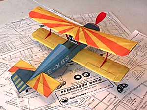

Model by Jeff VanDyke
Here's my first peanut. It's 95% done, still needs those long struts, prop assembly, headrest. I just got the stuctures together a few minutes ago and had to send in a pic. Thanks to a major blizzard which restricted everyone to home since Sat. morning I was able to get as far as I did. I hope to fly it this Friday. (glides across livingroom--kitchen pretty nice! about 2 seconds!)
I was able to "finish" my Andreason this weekend as the great blizzard of '99 had every one in West Michigan staying inside for a few days.